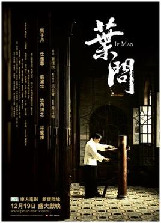
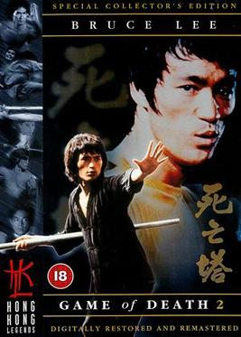
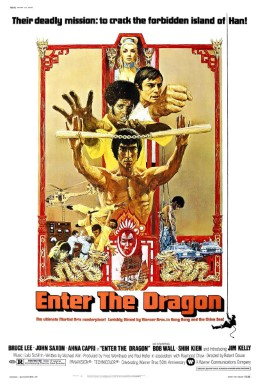

Batman
The Batman is a 2022 American superhero film based on the DC Comics character Batman. Produced by Warner Bros. Pictures, DC Films, 6th & Idaho, and Dylan Clark Productions, and distributed by Warner Bros. Pictures, it is a reboot of the Batman film franchise. The film was directed by Matt Reeves, who wrote the screenplay with Peter Craig. It stars Robert Pattinson as Bruce Wayne / Batman alongside Zoë Kravitz, Paul Dano, Jeffrey Wright, John Turturro, Peter Sarsgaard, Andy Serkis, and Colin Farrell. The film sees Batman, who has been fighting crime in Gotham City for two years, uncover corruption while pursuing the Riddler (Dano), a serial killer who targets Gotham's elite.

Mortal Kombat
Mortal Kombat is an American media franchise centered on a series of video games originally developed by Midway Games in 1992. The development of the first game was originally based on an idea that Ed Boon and John Tobias had of making a video game starring Jean-Claude Van Damme, but when that idea fell through, a science fantasy-themed fighting game was created instead. Still, the developers paid homage to him with Johnny Cage (one of the main characters in the many games), a fictional film star whose personal style resembles Van Damme's. The original Mortal Kombat was the first fighting game to introduce a secret fighter, reached if the player fulfilled a set of requirements.
Ip Man
Ip Man (Chinese: 叶问 / 葉問) is a 2008 Hong Kong biographical martial arts film based on the life of Ip Man, a grandmaster of the martial art Wing Chun and teacher of Bruce Lee. The film focuses on events in Ip's life that supposedly took place in the city of Foshan during the Sino-Japanese War. The film was directed by Wilson Yip, and stars Donnie Yen as Ip Man, with martial arts choreography by Sammo Hung. The supporting cast includes Simon Yam, Lynn Hung, Lam Ka-tung, Xing Yu, Hiroyuki Ikeuchi, and Tenma Shibuya. The film was a co-production between China and Hong Kong, and was the last film to be distributed by Mandarin Films.
Spider-Man: No Way Home
Spider-Man: No Way Home is a 2021 American superhero film based on the Marvel Comics character Spider-Man, co-produced by Columbia Pictures and Marvel Studios and distributed by Sony Pictures Releasing. It is the sequel to Spider-Man: Homecoming (2017) and Spider-Man: Far From Home (2019), and the 27th film in the Marvel Cinematic Universe (MCU). The film was directed by Jon Watts and written by Chris McKenna and Erik Sommers. It stars Tom Holland as Peter Parker / Spider-Man alongside Zendaya, Benedict Cumberbatch, Jacob Batalon, Jon Favreau, Jamie Foxx, Willem Dafoe, Alfred Molina, Benedict Wong, Tony Revolori, Marisa Tomei, Andrew Garfield, and Tobey Maguire. In the film, Parker asks Dr. Stephen Strange (Cumberbatch) to use magic to make his identity as Spider-Man a secret again following its public revelation at the end of Far From Home. When the spell goes wrong, the multiverse is broken open which allows visitors from alternate realities to enter Parker's universe.

Game of Death
The Game of Death (Chinese: 死亡的遊戲) is an incomplete Hong Kong martial arts film, filmed between August and October 1972, directed, written, produced by and starring Bruce Lee, in his final film project. Lee died during the making of the film. Over 100 minutes of footage was shot prior to his death,[2] which was later misplaced in the Golden Harvest archives.[citation needed] The remaining footage has since been released with Lee's original Cantonese and English dialogue, with John Little dubbing Lee's Hai Tien character as part of the documentary titled Bruce Lee: A Warrior's Journey. Much of the footage that was shot is from what was to be the climax of the film.
Enter the Dragon
Enter the Dragon (Chinese: 龍爭虎鬥) is a 1973 martial arts film directed by Robert Clouse and written by Michael Allin. The film stars Bruce Lee, John Saxon and Jim Kelly. It was Lee's final completed film appearance before his death on 20 July 1973, aged 32. An American and Hong Kong co-production, it premiered in Los Angeles on 19 August 1973, one month after Lee's death. The film is estimated to have grossed over US$400 million worldwide (estimated to be the equivalent of over $2 billion adjusted for inflation as of 2022), against a budget of $850,000. Having earned more than 400 times its budget, it is one of the most profitable films of all time as well as the most successful martial arts film.
